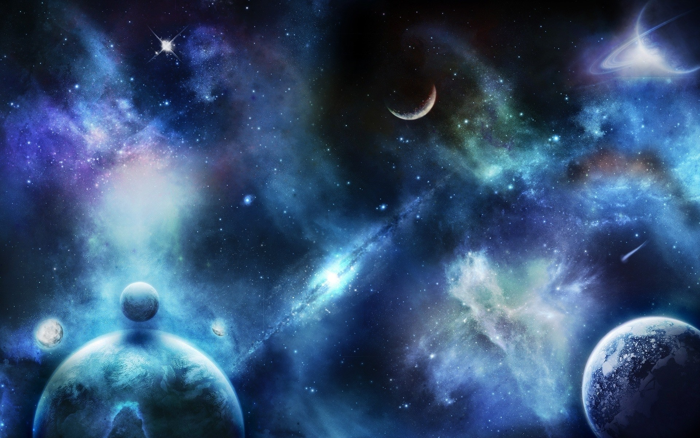
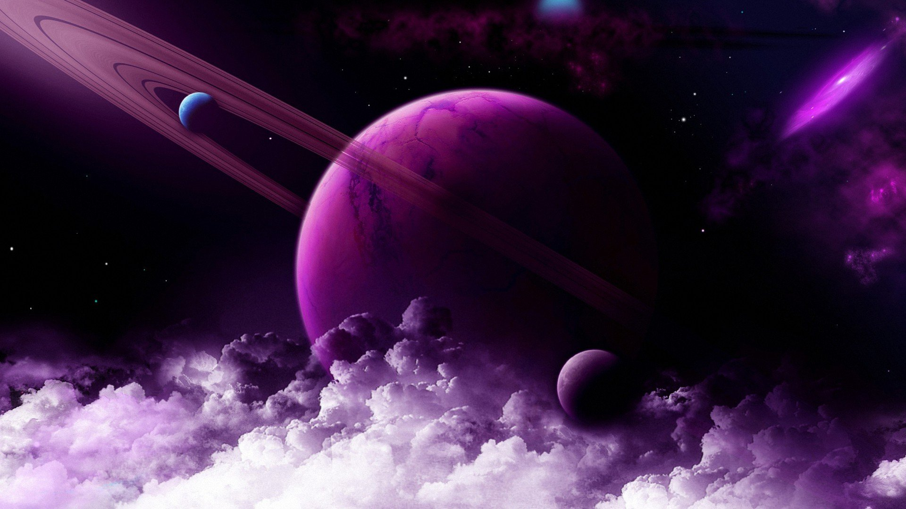
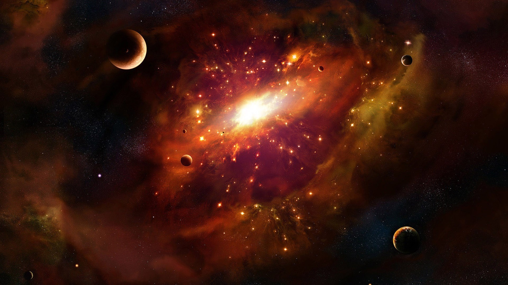
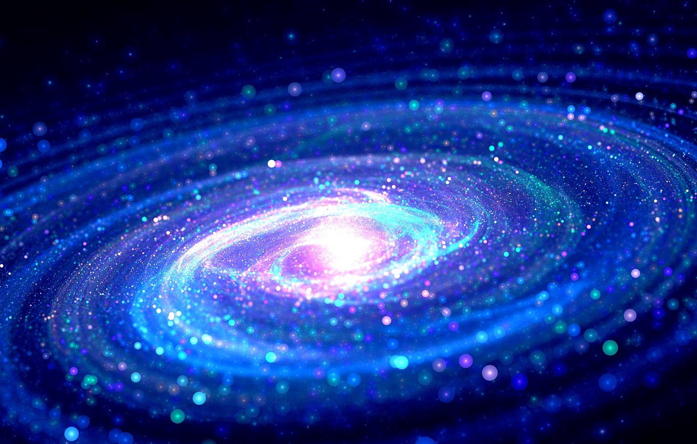

Вселенная
Вселенная – это необъятное пространство, которое невозможно охватить ни взглядом, ни человеческим разумом. Пространство, в котором рождаются, развиваются, стареют и умирают планеты и солнечные системы.

Что такое Вселенная?
Вселенная появилась миллиарды лет назад, и люди до сих пор не смогли доказать истинные причины ее образования. Она представляет собой все существующее пространство. Галактики, звезды, планеты – все это часть необъятной Вселенной.
Люди стараются изучать космос, но им предстоит проделать титаническую работу, прежде чем они смогут составить полное представление о его устройстве. Ежедневно астрономы из разных стран изучают новые области, но не могут добраться до границ мира. Причем исследования ведутся в разных направлениях: изучение Солнечной системы, соседних галактик, попытки установить общий размер Вселенной, подсчет космических объектов и т.д. Даже спустя десятки лет упорной работы 100%-е изучение внеземного пространства кажется недостижимой целью.
Bселенная постоянно меняется, что усложняет процесс ее исследования и составления описаний определенных ее частей. Но одно можно сказать точно: ее границы так так велики, что недоступны для изучения.С появлением телескопов ученые открыли Млечный путь, позже множество галактических пространств, а с начала 20 века развитие астрономии пошло семимильными шагами. Самым большим достижением современных ученых стало возникновение теории об эволюции Вселенной, согласно которой она расширяется с течением времени.

Строение вселенной
Звезды, которые видит человек, являются частью галактики. Солнце тоже входит в ее состав и находится на большом расстоянии от других светил. Если взглянуть на Млечный Путь со стороны, то он будет напоминать гигантский диск с большим скоплением звезд в центральной части. И таких галактик во Вселенной большое множество.
Интересный факт: Млечный Путь состоит примерно из 10 миллиардов звезд. Свету, чтобы добраться из одного конца галактики в другой, требуется 100 тысяч лет.
Звезды распределены в галактиках неравномерно, в разных частях имеются плотные скопления, напоминающие шар. Также есть пространства, где на протяжении многих световых лет нет ни одного светила.
Вокруг большинства звезд находятся планеты, обладающие уникальным внешним видом, атмосферой и другими особенностями. Также вокруг некоторых имеются спутники – небольшие космические объекты, удерживаемые за счет притяжения.
Галактик во Вселенной огромное множество, и многие имеют спиралевидную форму, которую хорошо заметно благодаря расположению светил. Такой тип называется протогалактиками. Ученые предполагают, что во время своего образования они вращались по кругу с большой скоростью, и постепенно замедлились. Другие галактики из-за сильного сжатия водородного газа не начали движение вокруг центральной оси и остались в форме эллипса.

Как возникла Вселенная
На данный момент теория Большого взрыва является наиболее логичным предположением о том, как возникла Вселенная. Она объясняет появление объектов, физических законов, материй и всего того, что находится в космосе.
Предположительно, все началось с небольшой сингулярности огромной плотности, для которой не существовало времени. В определенный момент она начала расти с огромной скоростью, порождая пространство, физические законы, гравитацию и т.д. Долгое время температура внутри была настолько высокой, что образование каких-либо частиц было невозможным.
